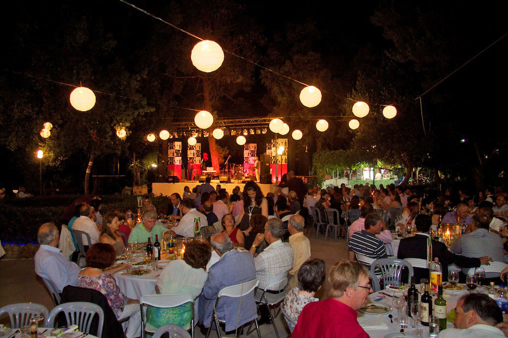
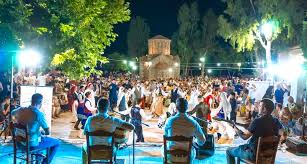

The Rich History of Crete
Yakinthia Festival
July (Annual)

Held in the stunning location of Saint Hyakinthos in Anogia, this cultural festival combines music, poetry, and theatrical performances. The festival takes place in an open-air theater at an altitude of 1200 meters on Mount Psiloritis, creating a unique atmosphere where art meets nature.
Rethymno Wine Festival
Early July

A celebration of Cretan wine and local products, this festival features wine tasting, traditional music, and dance performances. Visitors can sample wines from local producers while enjoying traditional Cretan cuisine and live entertainment.
Houdetsi Festival
August

A four-day celebration of world music, the Houdetsi Festival brings together musicians from around the globe. The festival features workshops, seminars, and concerts throughout the village, with special emphasis on traditional Cretan music and its connection to other musical traditions.
Kastello Cultural Festival
August-September

Taking place in the historic village of Kastelli, this festival celebrates traditional Cretan culture with music performances, art exhibitions, and theatrical plays. Local craftsmen showcase traditional arts and crafts, while food vendors offer authentic Cretan delicacies.
Knife Festival in Chania
Late August

This unique festival celebrates the traditional craft of Cretan knife-making. Master craftsmen demonstrate their skills, display their creations, and share the history of this important cultural tradition. The festival also features traditional music, dance performances, and local food.
Tsikoudia Festival
October-November

Celebrating the production of Crete's traditional spirit, tsikoudia (or raki), this festival marks the distillation season. Villages across Crete host celebrations with music, dance, and plenty of food to accompany the freshly distilled spirit.